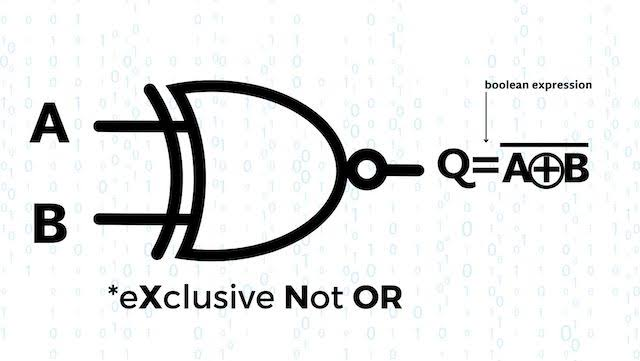
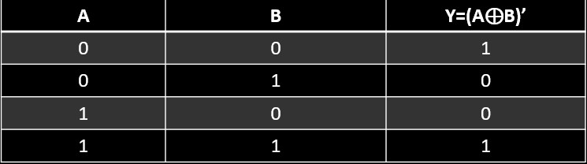

X-NOR GATE
An XNOR gate (sometimes referred to by its extended name, Exclusive NOR gate) is a digital logic gate with two or more inputs and one output that performs logical equality. The output of an XNOR gate is true when all of its inputs are true or when all of its inputs are false.
Logic Diagram:
Truth Table:
